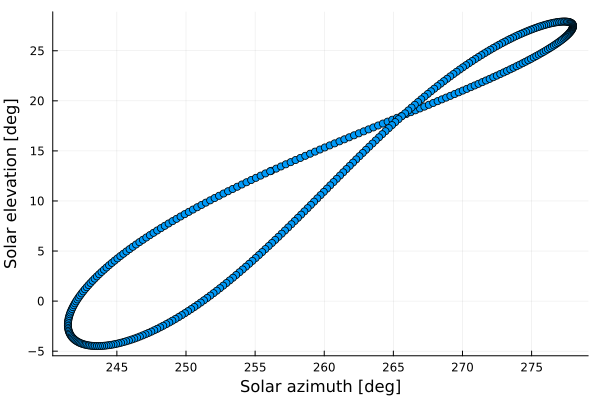
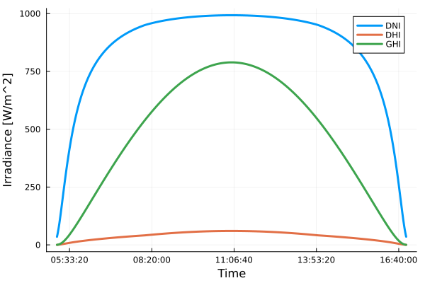

Getting started
using Dates, Plots, Helios
# Create a location and a year-long time range
location = Location(41.11148, 16.8554, 6) # latitude, longitude, altitude [meters]
time_range = let n = now(); n:Day(1):(n + Year(1)); end
# Compute azimuth and apparent elevation for such location and time range
solpos = Vector{SolarPosition}(undef, length(time_range))
for (i, dt) in enumerate(time_range)
solpos[i] = spa(location, dt)
end
# Let's create an analemma
analemma = scatter(
getfield.(solpos, :azimuth),
getfield.(solpos, :apparent_elevation),
xlabel = "Solar azimuth [deg]",
ylabel = "Solar elevation [deg]",
legend = false,
grid = true,
)
time_range = let today = DateTime(today()); today:Minute(1):(today + Day(1)); end
# Compute the irradiance for daylight hours
irradiance, daylight_times = Irradiance[], DateTime[]
for dt in time_range
solpos = spa(location, dt)
if solpos.apparent_elevation > 0
push!(irradiance, clearsky_ineichen(location, dt; solpos=solpos))
push!(daylight_times, dt)
end
end
# and plot its components
plt = plot(xlabel = "Time", ylabel = "Irradiance [W/m^2]", grid=true, )
plot!(plt, Time.(daylight_times), getfield.(irradiance, :dni), label="DNI", lw=3)
plot!(plt, Time.(daylight_times), getfield.(irradiance, :dhi), label="DHI", lw=3)
plot!(plt, Time.(daylight_times), getfield.(irradiance, :ghi), label="GHI", lw=3)